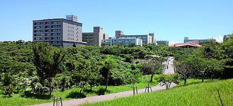

サイトマップ
問い合わせ先一覧
交通・アクセス
ホーム
한국어
中文
English
日本語
入学希望者の皆さまへ
在学生・保護者の皆さまへ
卒業生の皆さまへ
企業・研究者の皆さまへ
社会人・地域の皆さまへ
大学情報
学部・院等
入試情報
教育・研究
国際・留学
社会連携
就職情報
研究室
学生生活
ホーム
学部・大学院・センター等

学部・大学院・センター等
学部
法文学部
観光産業科学部
教育学部
理学部
医学部
工学部
農学部
大学院
人文社会科学研究科
観光科学研究科
教育学研究科
臨床心理学専攻
医学研究科
保健学研究科
理工学研究科（理学系）
理工学研究科（工学系）
農学研究科
法務研究科
鹿児島大学大学院連合農学研究科
学内共同教育研究施設
産学官連携推進機構
機器分析支援センター
生涯学習教育研究センター
総合情報処理センター
留学センター
大学教育センター
外国語センター
就職センター
アドミッション・オフィス（琉大へ行こう）
極低温センター
琉球大学博物館（風樹館）
大学附属研究施設
亜熱帯生物圏研究センター
分子生命科学研究施設
瀬底研究施設
西表研究施設
国際沖縄研究所
島嶼防災研究センター
大学運営推進組織
研究推進機構
亜熱帯島嶼科学超域研究推進機構
大学評価センター
インスティテューショナル・リサーチ（IR）推進室
関連施設
保健管理センター
附属図書館
このページのTOPへ
このサイトについて
|
お問い合わせ
|
交通・アクセス
|
関連サイト
国立大学法人
琉球大学
〒903-0213 沖縄県中頭郡西原町字千原1番地
Copyright(C)1997-2015,UNIVERSITY OF THE RYUKYUS